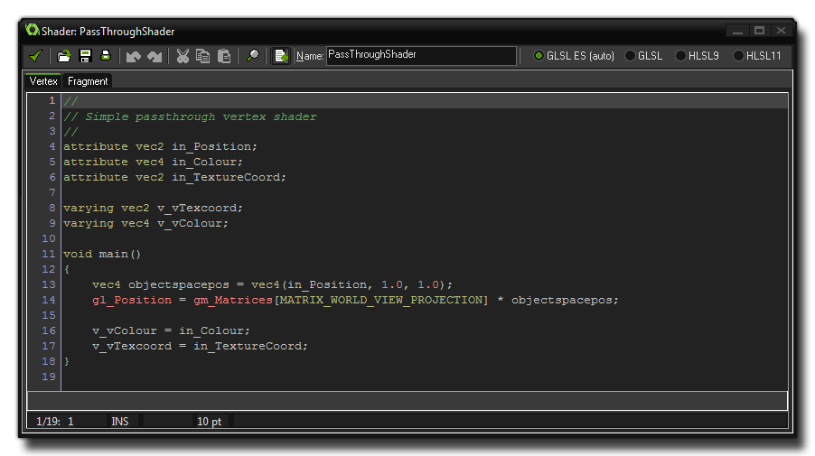

Shaders are a very powerful tool that can be used to manipulate
the graphics that your game renders to the screen, permitting
incredibly fast effects that can range from, for example, adding a
subtle colour hue to a sprite, right up to full screen distortion
effects.
A shader is basically a two-part program that runs directly on
the graphics card itself, making it very fast since the GPU is
doing all the work and freeing up CPU cycles for your game
code.
The full shader is comprised of a vertex shader program, and
a fragment shader program (also known as a pixel
shader). Both of these tiny programs work together in order to
manipulate what the graphics card renders to the screen. This then
permits you to manipulate in real time, the position, colour and
alpha values that are actually rendered into the display
buffer.
A complete overview of how shaders really work and what place they
have in the graphics pipeline is outside the scope of this manual,
but YoYo Games have produced a number of Tech Blog
articles which give an excellent base to start from:
The shader editor has the exact same functionality as the
Script Editor, with auto-complete,
search, print, etc... as well as all the same keyboard shortcuts.
However, please note that there is no syntax checking, due to the
code being written using the specific shader language and
not GML.  The code editor itself is split into
two sections, with each one being available from tabs at the top.
This is because you cannot create a shader without both
parts. Even if you wish to only use the fragment shader you will
have to have created a "pass through" vertex shader (by default any
new shader being created will have a vertex and fragment pass
through shader already coded for you).
The shader program itself is written in a shader language
with the default, cross platform choice being GLSL ES. Using
this language guarantees that your game will work correctly on all
platforms that shaders are available on, but you can also choose to
use one of three other languages if you are only targeting a
specific platform. The available languages and their respective
targets are shown in the table below:
| Shader Language | Target Platform |
|---|---|
| GLSL ES | All targets |
| HLSL9 | Windows 32 bit |
| HLSL11 | UWP, XboxOne |
| GLSL | Mac and Ubuntu (Linux) |
It is worth noting that you can use GLSL ES shaders on the
HTML5 target platform but you must have enabled
WebGL in the HTML5 Global Game
Settings otherwise it will not work.
For further details on the shader functions and how they can be
used in GameMaker: Studio please see the section Reference: Shaders.
NOTE: This manual will not cover any of the Open
GL shader functions and variables, unless they are special ones
that exist ONLY in GameMaker: Studio (which can be found
here.
For a complete overview of the available GLSL ES functions and
variables please see the OpenGL ES Shading Language (GLSL ES) Reference
Pages.